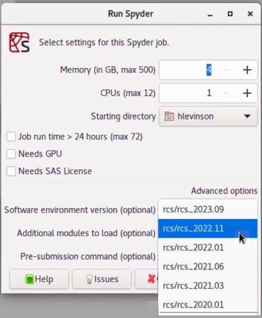

🔙 Use Software Versions
Each time we update our software environments we preserve previous versions so that you can roll back for reproducibility or if your code stops working after an update. This section details the specific software environment versions available.
Select desktop environment
As an illustration of the benefits of preserving historical software environments, imagine that you have a python project and that your Pandas code no longer works with the latest Pandas release in the current software environment. In that case you can start Spyder and revert to a previous software environment in order to run your analysis using an older version of Pandas. The screen-shot below shows how to use the Software environment version selector to run and older version of python.

Software environments are named following a rcs_year.version scheme.
For example, the last environment released in 2022 is named
rcs_2022.11. The list below shows you key information about each
environment, including a command that you can run from the terminal to
get a detailed software version list.
Select terminal environment
In order to facilitate reproducible research and analysis we preserve old software environments so that you can switch back to them later if needed. These older environments can be loaded using Lmod.
Running
will show you the available environments, named by date and version number.For example, suppose that you have a python project and that your pandas code no longer works with the latest pandas release in the current software environment. In that case you can revert to a previous software environment and run your analysis using an older version of pandas.
You can use the ml command from the terminal to list, load, and unload Lmod environment,
as shown below.
ml avail
--------------------------- /usr/local/app/rcs_bin/grid3/modulefiles ---------------------------
rcs/rcs_2021.03 rcs/rcs_2022.01 rcs/rcs_2023.09 (D,L)
rcs/rcs_2020.01 rcs/rcs_2021.06 rcs/rcs_2022.11
Where:
D: Default Module
L: Module is loaded
Use "module spider" to find all possible modules.
Use "module keyword key1 key2 ..." to search for all possible modules matching
any of the "keys".
You can get detailed information about specific software modules using the
ml spider command:
----------------------------------------------------------------------------
rcs: rcs/rcs_2023.09
----------------------------------------------------------------------------
Description:
Anaconda environment for research computing
This module can be loaded directly: module load rcs/rcs_2023.09
Help:
Sets up environment for Data Science and Statistical computing.
A huge list of software is avalable, including 'python', 'spyder', 'R',
'rstudio', 'emacs', 'vscode', rclone, ripgrep, nnn and much more.
See https://hbs-rcs.github.io/hbsgrid-docs/ for documentation
and https://hbs-rcs.github.io/hbsgrid-docs/environments/#rcs_2023.09
for version-specific details.
For a detailed software list open a terminal and run
conda env export -n rcs_2023.09
Finally you can use ml to load and unload specific environments.
Detailed Lmod documentation is available here and you can learn more about the environments available on the HBS Grid in the Environments versions documentation.
Reproducing environments
The instructions above show how to use different software environment versions on the HBS Grid. You may sometimes need to go a step further than this, e.g., to continue your work on another system after you leave HBS, or to provide reproduction instructions to meet a journal publication requirement. To do this you need to know that the environments described here are managed using the conda package manager on a Linux system.
You can recreate these environments on Linux systems by following the steps below:
Re-create environments on another system
- Obtain access to a Linux system. If you don't have have a suitable physical computer you may wish to install one in a virtual machine. Many tutorials are available to show you how to do this.
- Download the MambaForge installer and install it on your Linux system.
- Create the conda package list.
- Copy the package list file to your Linux system and
use
condato re-create the environment.
In general it is not possible to exactly re-create these environments on Windows or Mac machines. You can however examine the package lists and manually create environments with the same versions of the software needed for your project.
Create your own environments
Software installation requests
If you find that the software you need is not available in the standard HBS Grid software environments please reach out to research@hbs.edu.
If you prefer to create and manage your own software environments you may do so using
conda. This is the same package manager used
to maintain the system-wide software environments on the HBS Grid. conda has already been installed and
configured for you on the HBS Grid, making it easy to create and manage your own environments by following the
official conda environment documentation.
You can share and reproduce your own conda environments on other computers and systems as well.
When setting up conda outside the HBS Grid we strongly encourage using the
MambaForge installer to get going with conda more quickly.
(conda is already installed and configured for you on the HBS Grid, there is no need to
install it yourself there.)
Some useful documentation on creating environments, installing packages, and sharing is available, along with a helpful tutorial.
Environment versions
Current and historical software environments available system-wide on the HBS Grid are described below.
rcs_2024.09
This software environment is a user-friendly collection of software and utilities designed to make data science and statistics easier for HBS Grid users.
If there is a software program that you need is not yet available and would be of benefit to the larger community, please contact us via the Research Inbox and we will follow-up as needed.
More details about this release will be available soon.
rcs_2023.09
This software environment is a user-friendly collection of software and utilities designed to make data science and statistics easier for HBS Grid users.
The 2023.09 release brings a huge number of application and package updates, including:
- Python updated to 3.10.12
- R updated to 4.2.2
- Stata updated to version 18
- Octave updated to 7.3.0
- Julia updated to 1.9.0
- RStudio updated to 2022.12.0
- Spyder updated to 5.4.5
- LibreOffice updated to 7.5.5.2
- VSCode updated to 1.82.0
- Arrow (C++, R and Python) updated to 11.0
- Tensorflow updated to 2.11
- PyTorch updated to 2.0.0
- CUDA toolkit updated to 11.8.0
- nltk updated to 3.8.1
- Jupyterlab updated to 3.6.5
- MKL updated to 2022.2.1
- gcc updated to 12.3.0
...and many others.
Versions that remain unchanged:
- Emacs 28.2
Documentation is available on line or via the HBS Grid help application on the Grid. If you have any difficulties or feature requests please reach out to RCS to continue the conversation.
For complete environment details, open a terminal and run
rcs_2022.11
This software environment is a user-friendly collection of software and utilities designed to make data science and statistics easier for HBS Grid users.
In this release we have added a number of new applications and packages, including:
- Quarto, an open-source scientific and technical publishing system built on Pandoc
- Gephi visualization and exploration software for all kinds of graphs and networks
- GitHub CLI brings GitHub to your terminal
- SCC a very fast accurate code counter with complexity calculations and COCOMO estimates written in pure Go
If there is a software program that you need is not yet available and would be of benefit to the larger community, please contact us via the Research Inbox and we will follow-up as needed.
The 2022.11 release brings a huge number of application and package updates, including:
- Python updated to 3.10.6
- R updated to 4.2.1
- MATLAB updated to 2022b
- Octave updated to 7.2.0
- Julia updated to 1.8.2
- RStudio updated to 2022.07.2
- Spyder updated to 5.3.3
- LibreOffice updated to 7.3.6
- VSCode updated to 1.72
- Emacs updated to 28.2
- Arrow (C++, R and Python) updated to 9.0
- Tensorflow updated to 2.10
- PyTorch updated to 1.12.1
- CUDA toolkit updated to 11.7.0
- Jupyterlab updated to 3.5.0
- MKL updated to 2022.1.0
and many others.
Documentation is available on line or via the HBS Grid help application on the Grid. If you have any difficulties or feature requests please reach out to RCS to continue the conversation.
For complete environment details, open a terminal and run
rcs_2022.01
This software environment is a user-friendly collection of software and utilities designed to make data science and statistics easier for HBS Grid users.
In this release we have added a large number of new statistics and data science applications and packages, including:
- JASP, a free menu-driven statistics application similar to SPSS
- Cytoscape, an open source software platform for visualizing complex networks,
- DuckDB, an in-process SQL OLAP database management system
- texminer, functions for text mining and topic modeling in R
- Dedupe, a library that uses machine learning to perform de-duplication and entity resolution in Python
- awscli, a unified tool to manage your AWS services
- snakemake, a workflow management system to create reproducible and scalable data analyses
and many many more!
If you find a software program that you need is not yet available please let us know and we will try to install it for you.
The 2022.01 release also brings a huge number of application and package updates, including:
- Python updated to 3.9.9
- R updated to 4.1.1
- Octave updated to 6.4
- Julia updated to 1.7.1
- RStudio updated to 2021.09.1
- Spyder updated to 5.2.1
- LibreOffice updated to 7.1.8
- VSCode updated to 1.63.2
- Emacs updated to 27.2
- Arrow (C++, R and Python) updated to 6.0
- Tensorflow updated to 2.7
- PyTorch updated to 1.10.0
- CUDA toolkit updated to 11.5.0
- Jupyterlab updated to 3.1.0
- MKL updated to 2021.4.0
and hundreds of others.
In this release we have also dropped support for several infrequently used programs:
- OCRfeeder -- use gImageReader for OCR instead
- Gephi -- replaced by Cytoscape for network visualization
- PSPP -- replaced by JASP, a modern statistics GUI that uses R under the hood
- Meld -- use Diffuse for graphical text comparisony
Documentation is available on line or via the HBS Grid help application on the Grid. If you have any difficulties or feature requests please reach out to us.
For complete environment details, open a terminal and run
rcs_2021.06
The rcs_2021.06 environment was released in May 2021. It includes updated
Octave, Python, QGIS, R, Stata, and other software. Key software versions included in this
environment are listed below.
- CUDAtoolkit 11.2
- Spyder 5.0
- Texlive 2021
- Emacs 27.2
- Julia 1.6.1
- Jupyterlab 3.0
- Mathematica 12
- Matlab R2021a
- Numpy 1.20
- Octave 6.2
- Pandas 1.2
- Python 3.9
- Pytorch 1.8
- QGIS 3.18
- R 4.0
- R-tidyverse 1.3
- SAS 9.4
- Stata 17
- Tensorflow 2.4
For complete environment details, open a terminal and run
rcs_2021.03
The rcs_2021.03 environment was released in March 2021. It includes updated
Octave, Python, QGIS, R, Stata, and other software. Key software versions included in this
environment are listed below.
- CUDAtoolkit 10.1
- Emacs 27.1
- Julia 1.5.3
- Jupyterlab 3.0
- Mathematica 12
- Matlab R2020a
- Numpy 1.20
- Octave 6.2
- Pandas 1.2
- Python 3.8
- Pytorch 1.7
- QGIS 3.16
- R 4.0
- R-tidyverse 1.3
- SAS 9.4
- Stata 16
- Tensorflow 2.2
For complete environment details, open a terminal and run
rcs_2020.01
The rcs_2020.01 environment was released in March 2020. It includes updated
Octave, Python, QGIS, R, Stata, and other software. Key software versions included in this
environment are listed below.
- CUDAtoolkit 10.1
- Emacs 27.1
- Julia 1.5.3
- Jupyterlab 2
- Mathematica 12
- Matlab R2019a
- Numpy 1.19
- Octave 6.2
- Pandas 1.2
- Python 3.7
- R 3.6
- R-tidyverse 1.2
- SAS 9.4
- Stata 15
- Tensorflow 2.2
For complete environment details, open a terminal and run